Bandos
No mundo de One Piece, os bandos piratas são grupos formados por piratas que navegam juntos em busca de aventura, tesouros e, muitas vezes, do lendário One Piece. Cada bando tem seu próprio capitão, normalmente o pirata mais forte, e uma tripulação composta por membros com diferentes habilidades, como navegadores, espadachins, cozinheiros e médicos.
Um bando é muito mais que uma união de piratas. Cada tripulação é construída a partir de sonhos individuais, laços de amizade e valores em comum dos membros. Alguns bandos têm motivações nobres, como o desejo de liberdade ou a simples formação de uma família, enquanto outros são movidos pela ambição, sede de poder ou pura maldade.
Principais bandos de One Piece
Chapéus de Palha
Capitão: Monkey D. Luffy
Navio principal: Thousand Sunny
Recompensa total:  8.816.001.000
Membros:
Roronoa Zoro, Nami, Usopp,
Sanji, Chopper, Nico Robin, Franky, Brook,
Jinbe, Nefertari D. Vivi

Piratas do Ruivo
Capitão: Shanks, "O Ruivo"
Navio principal: Red Force
Recompensa total: Mais de 4.048.900.000
Membros: Benn Beckman, Lucky Roux, Yasopp, Limejuice, Bonk Punch, Monster, Building Snake, Hongo, Gab
Piratas do Barba Negra
Capitão: Marshall D. Teach
Navio principal: Saber of Xebec
Recompensa total: Pelo menos 4.246.200.000
Membros:
Jesus Burgess, Shiryu, Van Agur, Avalo Pizarro,
Laffitte, Catarina Devon, Sanjuan Wolf, Vasco Shot, Doc Q,
Kuzan